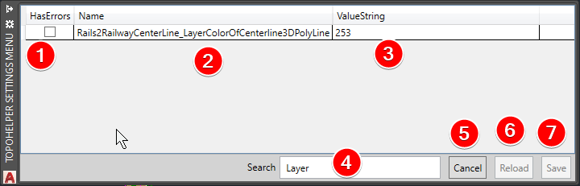

Instellingen¶
Door gebruik te maken van deze opdracht IAMTopo_Settings, kan je de variabelen die worden gebruikt door de tool TopoHelper, aanpassen naar een voor de gebruiker gewenste waarde.
Het instellingen paneel¶
Aan de hand van dit paneel kan je de instellingen, die worden gebruikt door de verschillende functies, aanpassen en opslaan voor een volgende sessie. Zo moet je niet steeds dezelfde instellingen opnieuw in te geven via de opdracht regel.
Een overzicht¶

Woordje uitleg bij de afbeelding¶
Hieronder een van de aangeduide punten zichtbaar in de afbeelding hierboven.
Wanneer een verkeerde waarde wordt ingevuld in de tabel, dan zal hier een vinkje bij geplaatst zijn. Dit betekent dat de wijziging niet kkan worden opgesslaan. U dient eerst de foutive waarde aan te passen.
Dit is de naam van de variabel.
Dit is de waarde van de variabl.
Geef hier een woord of enkele letters in om de instellingen te doorzoeken.
Druk op deze knop om het paneel te sluiten zonder de wijzigingen op te slaan.
Herladen van de op het systeem opgeslagen waarden van de variabelen.
Opslaan van de wijzigingen. Belangrijk: wanneer je de aanpassingen niet bewaard a.d.h.v. de knop, gaan de aanpassingen verloren!
Gebruik maken van het zoekveld¶
De zoekfunctie of het filter zal enkel de variabelen weergeven die een stukje van de zoektekst bevatten. Om de ongefilterde resultaten terug te kunnen zien verwijder je de al opgegeven tekst. Je kan zowel op naam, als waarde zoeken.
Naamgeving van de instellingen¶
Om het zoeken doorheen de instellingen zo eenvoudig mogelijk te maken, werd de naamgeving van een variabel steeds op dezelfde manier opgebouwd:
Naam = {naam van de functie}_{beschrijving van de variabel}
Voorbeeld¶
De variabel Rails2RailwayCenterLine_LayerColorOfCenterline3DPolyLine
Rails2RailwayCenterLine = naam van de functie
LayerColorOfCenterline3DPolyLine = beschrijving van de variabel, in dit voorbeeld dus is het dus de kleur die aan de laag waarin de 3d-polylijn van de spooras wordt getekend wordt toegewezen